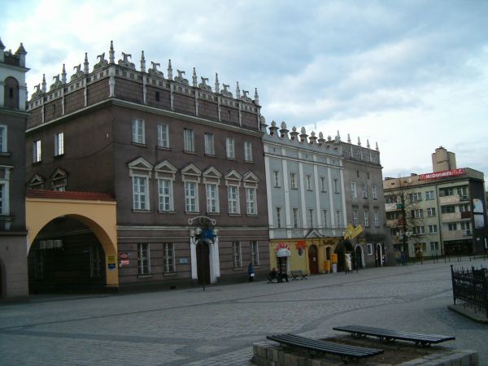
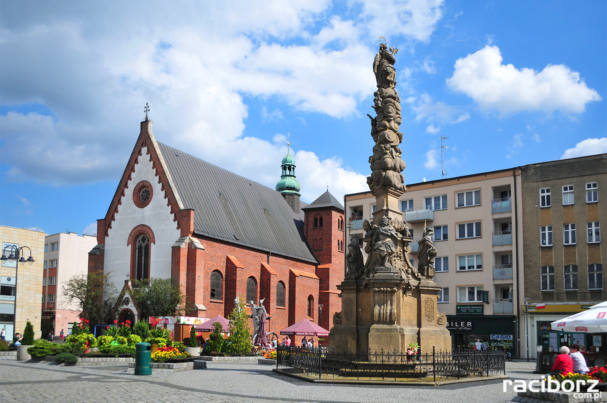

Styl wewnętrzny osadzony
Zmiana stylu w znaczniku span wyróżniony fragmencik
tak dla próby.
A to div
z nagłówkami i obrazkiem
wyśrodkowany cały blok
Racibórz znajduje się w południowej części Polski, a jego współrzędne geograficzne to 18º 13' długości geograficznej wschodniej i 50º 05' szerokości geograficznej północnej[4][5]. Miasto jest oddalone o 30 km od Ostrawy, 75 km od Katowic, 75 km od Opola, 145 km od Krakowa, 160 km od Wrocławia oraz 350 km od Warszawy[4][6][7].
Racibórz pod względem administracyjnym leży w południowo-zachodniej części województwa śląskiego[8][9], w powiecie raciborskim, niedaleko granicy z Czechami. Graniczy od północy z gminami Rudnik i Nędza, od wschodu z gminami Kornowac i Lyski, od zachodu z gminą Pietrowice Wielkie, a od południa z gminami Krzanowice, Krzyżanowice i Lubomia[5][9].